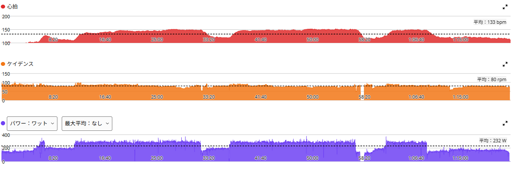
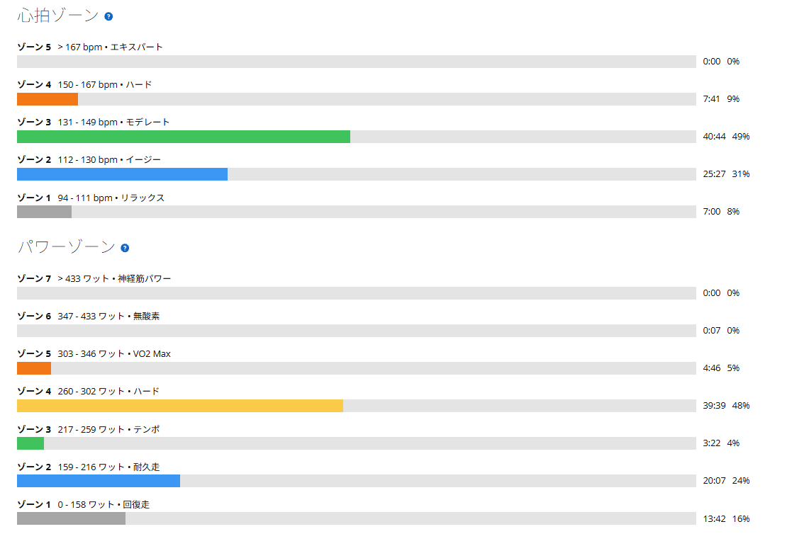

脚は残っていた。でも、3本目をやめた。――完全レスト明けのSST
日曜日は完全レストにした。先週はローラー8分×4本や登坂練習でしっかり負荷をかけ、土曜日には友人とMTBでのんびり走っていた。たまには完全に休んでみよう、と思ったのである。
翌月曜日は、天候を考えてローラーへ。メニューはいつものSST20分×3本。FTP設定289Wで、今回は280W前後を揃えたい。

約42km・NP252W・TSS103
- 全体42.40km / 1時間21分49秒 / 運動量1,137kJ
- 負荷平均232W / NP252W / IF0.871 / TSS102.9 / FTP設定289W
- 心拍・回転平均133bpm / 最大153bpm / 平均80rpm

最初の40分は、むしろ順調
| 本数 | 時間 | 平均パワー | W/kg | 心拍平均 |
|---|---|---|---|---|
| 1本目 | 20分 | 283W | 3.93 | 143bpm |
| 2本目 | 20分 | 282W | 3.92 | 147bpm |
| 3本目 | 約6分 | 278W | 3.86 | 146bpm |
W/kgは体重約72kgで計算した。1本目も2本目も280Wを超えていて、数字としては良い。11月2日には274→280→280Wで20分×3本を完遂したが、今回の前半はそれより高めの出力だ。しかし3本目は、約6分で終了した。
脚ではなく、気持ちが先に切れた
ここが今日の不思議なところで、脚が限界だったわけではない。むしろ、そこまで脚を追い込んでいる感じはしなかった。それなのに、どうにもやる気が続かない。「今日はもういいかな」と思ってしまい、3本目を途中でやめた。
もちろん、予定の20分×3本を達成できていないのだから未完遂である。それはそれとして、限界まで踏んだ結果の失速とは違う。今日は体力より、集中や意欲の方が先に切れてしまった感覚だ。
完全レスト明けは、自分には合わないのか
普段は毎日少しでも回すことが多い。だから、まったく乗らずに1日休んだ後の練習は、リズムがつかみにくいのかもしれない。自分には、短いアクティブレストで脚を動かしておく方が合っているのではないか。そんな気もした。
ただ、ここはまだ仮説にすぎない。完全レストを1回入れたから意欲が落ちた、とは証明できない。先週までの負荷、ローラーの単調さ、単に今日の気分など、考えられる要因はいくつもある。
TSS103でも、全部OKではない
TSSだけ見れば100を超えており、軽い練習ではない。でも「TSSを積めたから全部OK」とするのも違うし、「完遂できなかったから全部ダメ」とするのも違う。最初の40分はきちんと走れたことと、最後は気持ちが続かなかったこと。その両方を記録しておこう。
次にSST20分×3本をやるときは、280W前後を揃えられるかだけでなく、3本目でどんな感覚になるかを確認したい。完全レストとアクティブレストのどちらが自分の練習リズムに合うのかも、数回の実績を重ねて考えるつもりだ。
脚は残っていた。でも、気持ちが続かなかった。毎回うまくいくわけじゃない。こんな日も含めて、富士ヒルゴールドへの道のりなのだと思う。